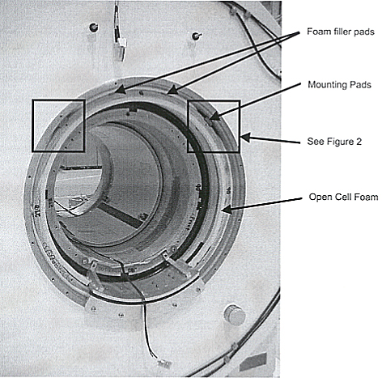
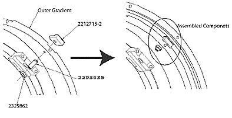
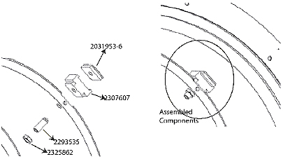

Operating Documentation
Direction 5440001-3, Rev# 6
Signa HDxt Service Methods
Module Version 2.0, Version Date 6/26/07
Operating Documentation |
| Required Persons | Preliminary Reqs | Procedure | Finalization |
|---|---|---|---|
| 1 | Not Applicable | 3 hours | Not Applicable |
All Signa systems with BRM or CRM in a Cx/K4 (LCC) Magnets, GE S Series Magnets, GE Cx Magnets and Oxford magnets. The purpose of this upgrade is to prevent excessive gradient coil motion, which can result in image quality issue such as DW-EPI pixel voids.
| Last Revised: | June 22, 2007 |
SeeTable 1 for the contents of Kit 2307608
Table 1: 2307608 Gradient Radial Support Upgrade Kit
| Item | Part Number | Description | Quantity |
| 1 | 2319693 | Gradient Coil Radial Support Instructions | 1 |
| 2 | 2325862 | Nylon Hex Nut M16 | 4 |
| 3 | 2307607 | Radial Support Spacer | 4 |
| 4 | 2293535 | Set Screw M16 | 4 |
| 5 | 213953-6 | CRM Mounting Pad with Neoprene | 4 |
| 6 | 2212715-2 | BRM Mounting Pad with Neoprene | 4 |
| 7 | 2181231-2 | Filler Pad | 4 |
| 8 | 2379255 | Foam, Gray Textured Surface, 116~Lg | 2 |
Signa Cx/K4 Magnet Wide Open Enclosure Bridge Support Upgrade
BRM RF Shield Grounding Upgrade
This procedure must be performed on both ends of the magnet. Start with either end.
Pull out 1/2 Inch (1.27mm) rubber cord from between gradient coil and magnet bore down to the gradient support bracket.
Cut the rubber cord 3 inches (7.6 cm) from each side of the gradient support bracket and push the ends back in.
Install foam filler pad (2181231-2) in the 1 o’clock and 11 o’clock outer gradient coil slots as shown in Illustration 1. The filler pads are to prevent airflow.
Illustration 1: Open Magnet

Insert the cell foam (2379255) between the gradient and magnet bore, overlapping the remaining rubber cord at the bottom to form a good air seal. Trim as needed.
Refer to Illustration 2,Illustration 3 orIllustration 4 depending on your magnet, Install M16 allen head set screw (2293535) in the 10 o’clock and 2 o’clock positions.
| NOTE: | It is important to make sure the mounting pad is properly set in the gradient bore slot such that the set screw tip engages into the indent in the pad. |
Illustration 2: BRM LCC Radial Support

Illustration 3: CRM/BRM S Series Radial Support

Illustration 4: CRM LCC Radial Support

GE S series/Oxford/3T/4T Magnet only: Insert spacer (2307607) between set screw and mounting pad.
Tighten setscrew until snug (pad doesn’t move), then torque each screw 1/4 - 1/2 turn past snug.
Thread nut 2325862 over M16 setscrew until nut is snug against inner diameter of outer gradient coil. Then torque an additional 1/4 - 1/2 turn past snug.
Repeat all previous steps for the opposite end of bore.
Center the coil in the bore left and right by adjusting the radial supports so that the gap between the coil and magnet bore is equal at the 90 degree and 270 degree positions within 1 mm.
Indicate the modification has been completed in the site log.
No finalization steps.